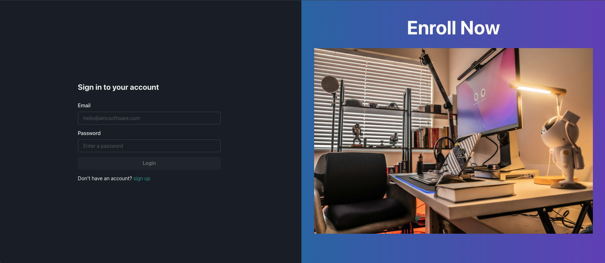
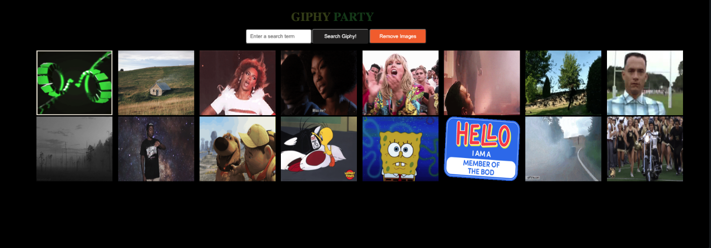
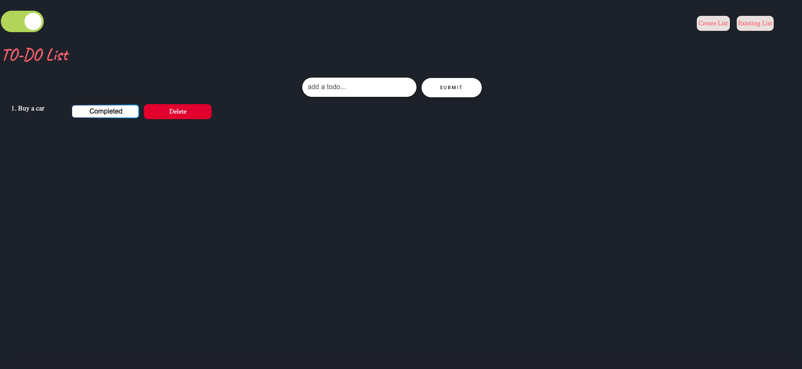
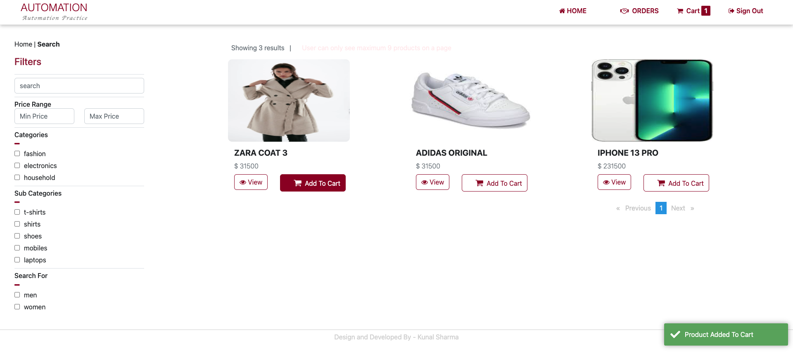

Software Developer in Test
With over a decade of experience in software testing and automation, I have honed my expertise as a Selenium Automation Tester using an array of advanced tools and technologies. My proficiency spans across TestNG, Java, Appium, Docker, Jenkins, DevOps, AWS, Python, Log4j, performance testing with JMeter and LoadRunner, UI testing, and API testing using Rest Assured.
I have a proven track record of ensuring quality, reliability, performance, and security in software products. My experience includes creating comprehensive testing plans and transforming them into actionable test cases. As an AWS Certified, Certified Scrum Master, and Security+ Certified professional, I bring a strong foundation in security and cloud technologies to the table.
Click picture to view web app

The Student Enrollment App is a comprehensive application designed to manage user accounts efficiently. Built using a robust tech stack that includes Maven, Java, Spring Boot, React, Docker, AWS, and JWT token security, this application ensures secure and seamless user interactions.
Key Features:
- User Authentication: Users can log in with their credentials if they have an existing account. New users must create an account to access the app.
- User Management: Authorized users can create and delete other user accounts, making it easy to manage the enrollment process.
- Secure Access: The application employs JWT tokens for secure authentication and authorization, ensuring that user data is protected.
Technology Stack:
Backend: Developed using Java and Spring Boot, providing a reliable and scalable server-side foundation.
Frontend: Built with React, offering a responsive and user-friendly interface.
Containerization: Docker is used to containerize the application, ensuring consistency across different environments.
Cloud Hosting: Hosted on AWS, leveraging cloud infrastructure for scalability and availability.
Build and Dependency Management: Maven is used for project build and dependency management.

This is a Java Springs backend API created using Java Springs, JPA, JDBC, Maven, and PostgreSql.
To view the code or interact with the Java Springs CarBooking Service API:
Clone this repository using git clone https://github.com/vanessadixon1/CarBookingServices.git
Go into the repository
Install dependencies
npm install
Run the app
open a rest client to send api requests

This is a simple way to add and delete gifs using the Giphy api.
User is able to add gifs by searching a term, and remove all gif at one time.
This is a desktop app.
Technologies used:
HTML
CSS
JavaScript
Giphy API

ToDo list is a simple web application to save Your daily tasks in order not to miss anything.
Technologies used:
HTML
CSS
JavaScript
local Storage

This project showcases my expertise in automating web applications using Selenium WebDriver, TestNG, and Java. The objective of the project was to create a robust and scalable automation framework to test various functionalities of an E-commerce application. The project involved end-to-end testing of the application’s key features such as user login, product search, adding products to the cart, and the checkout process.
Features
This project showcases my expertise in automating web applications using Selenium WebDriver, TestNG, and Java. The objective of the project was to create a robust and scalable automation framework to test various functionalities of an E-commerce application. The project involved end-to-end testing of the application’s key features such as user login, product search, adding products to the cart, and the checkout process.
Reusable Page Object Model (POM): Implemented the Page Object Model to enhance code reusability and maintainability.
Data-Driven Testing: Used TestNG for data-driven testing to validate application behavior with multiple data sets.
Cross-Browser Testing: Ensured compatibility across different browsers (Chrome, Firefox) by configuring WebDriver.
Continuous Integration: Integrated with Jenkins for continuous testing and reporting.
Technologies used:
Selenium WebDriver: For automating browser interactions.
TestNG: For structuring and running the tests.
Java: The primary programming language for writing the automation scripts.
Maven: For managing project dependencies and build lifecycle.
Jenkins: For continuous integration and test execution
Log4j: For logging test execution details.